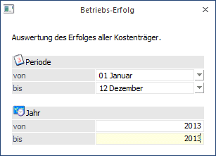
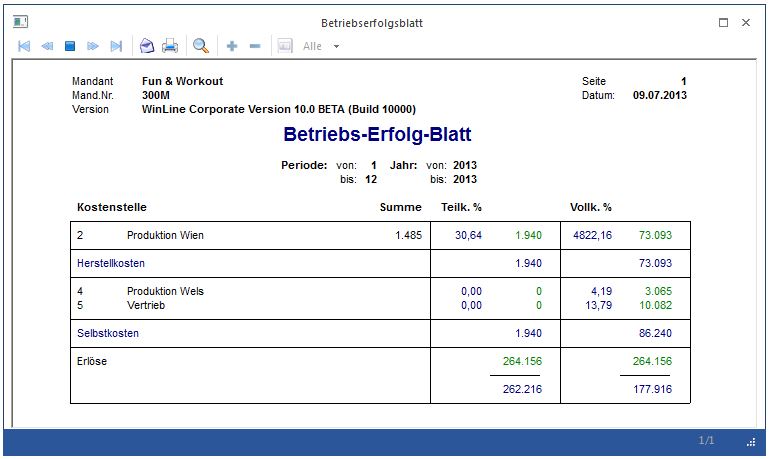

Sobald zwischen Einzel- und Gemeinkosten sowie zwischen fixen und variablen Kosten unterschieden wird, ist es notwendig, die Kostenstellen nach Ihrer Zurechenbarkeit auf Kostenträger zu verteilen.
Um nun den Erfolg aller Kostenträger zu berechnen, wählen Sie den Menüpunkt
1 Auswertungen
1 Betriebserfolg
oder Schnellaufruf
1 STRG + R
an.
Das Betriebs-Erfolgs-Blatt weist dieselbe Struktur auf, wie die Nachkalkulation, umfasst aber alle Kostenträger des Unternehmens. In dieser Auswertung ist auf einen Blick ersichtlich, ob sich das Unternehmen in der Gewinn-Zone (Ergebnis zu Vollkosten) befindet, oder zumindest welcher Deckungsbeitrag erwirtschaftet werden konnte (Ergebnis zu Teilkosten).

Über den Ausgabe Button kann mittels Drop Down ausgewählt werden, ob die Ausgabe auf den Bildschirm oder auf den Drucker erfolgen soll.
Nach Bestätigen des Ausgabe-Buttons wird der Betriebs-Erfolg errechnet.
+ Produktionskostenstellen
= Herstellkosten
+ Verwaltungs-und/Vertriebs-Kostenstellen
= Selbstkosten
+/- Erlöse
= DB/Gewinn
Das Betriebs-Erfolgs Blatt wird auf ganze Beträge gerundet ausgegeben.
